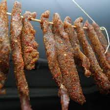

1) Tagin
Tagine is beloved as both a type of cookware and a type of dish. The Tagine is more or less a portable oven — a means to have a hot meal with stewed meats and/or vegetables anytime, any place. The clay pot consists of 2 parts — the base is a shallow dish, while the top fits snugly on the bottom. It is a cone shape that serves as both a handle and an area for the steam to collect and fall back down to the food, providing continuous moisture (via The Telegraph)
2) Tanjia
You already know the Tagine, but let us introduce you to its cousin, Tanjia. Just like Tagine, Tanjia is the name of a cooking vessel, and like Tagine, it's also the name of the resulting dish. However, Tanjia is cooked low and slow, and instead of cooking directly over a fire like Tagine, it is left to slowly cook over smoldering ashes. You might find that the Tanjia looks like a vase or a water jug with 2 handles on either side
3) Couscous
In Western countries, couscous is often served as a base for Tajine, but that's not how it's often eaten in Morocco. My Moroccan Food explains that the word "couscous" often refers to the entire dish, which usually consists of meat and vegetables cooked in a broth. It is then served on a bed of steamed semolina granules, what are traditionally referred to as couscous in the Western world. Couscous is made up of tiny balls of semolina flour. It's often served communally and made in large quantities to celebrate Morocco's National Holy Day, which is Friday.
4) Bastella
Pastilla is the type of hearty dish that screams hearty home cooking. It's a pie that's made in a skillet — think a tender, perfectly spiced, moist filling inside a flaky crust. The dough is called warqa, and its layers and textures are similar to filo dough.
5) Rfisa
Another favorite food in Morocco is this one. Rfissa is a very popular dish in Morocco during celebrations. It is traditionally made with Msemen pastry bread (Found in Moroccan breakfasts), chicken, lentil, and chicken broth. This Moroccan savory dish cannot be served without its two main ingredients, the Fenugreek spice, and Ras El Hanout a blend of several spices.
6) Zaalouk
Moroccan food has been influenced by many cultures over the centuries, and no dish is a greater example of that than Zaalouk. This dish is made by grilling or roasting eggplants and mixing them into cooked and spiced tomatoes. It is particularly popular amongst Moroccan Jews, who eat the salad during Shabbat (via Morocco Jewish Times).
7) Harira
Harira is Morocco's national soup. It is beloved across the country and each family typically puts its own spin on the dish. It is hearty but still has a light tomato base, so it's the perfect soup to enjoy during Ramadan, as many Moroccan families do. However, that's not to say it can't be eaten during other times of the year as well.
8) Seffa
The famed Moroccan dish Seffa is made by steaming broken vermicelli noodles or couscous, and then sweetening and serving them with powdered sugar, ground fried almonds, raisins, and cinnamon. Because it is somewhat sweet but still has savory notes with the vermicelli, Seffa is often eaten just after the main meal, according to E Persian food. The dish is a showstopper, as it is often served in a mound, piled high with trails of sugar and cinnamon alternated down the mound. To incorporate additional savory notes, Seffa is sometimes served with meat such as lamb, beef, or saffron chicken, which ups the fanciness a bit and makes it suitable for weddings and other special occasions. This version is referred to as Seffa Medfouna, which means Seffa buried and refers to the meat that's hidden within the mound.
9) Lhem b lbarkok(Meat with Prunes)

Slowly cooked on coal fire, that's how Moroccans serve you the most tender and jaw-dropping meat dish.Lamb meat is cooked with garlic, saffron, ginger, onions, and spices then topped with syrup-cooked prunes, and finally decorated with fried almonds.Lamb or beef tagines with prunes are the best food you can try in local restaurants in Morocco.This recipe is also quite easy to try at home, and you don't need a Tagine pot. A conventional pot with a heavy bottom can do just fine.
10) Gueddid( Cured and dried meat)
Gueddid is meat preserved by drying, either by putting it under the sun for a week or so, or on a charcoal fire. It is a common and traditional way for preserving meat that is found in old and tribal cultures all over the world.It is one of the Moroccan customs and traditions that follows cutting the meat of the sacrifice on the third day of the "Eid Aladha"; the biggest feast in the Islamic world. Women collect the meat slices in large containers, sprinkle them with salt and spices, mix them well and leave them for some time so that the effect of spices seeps into them. After washing the intestines well, the women collect the meat cuts and tie them to the bowel strips and make them into balls of different sizes.
11) Fried sardines

Moroccans have a special and distinctive way when it comes to preparing sardines. After purifying the fish, washing it with vinegar and distilling it from the water, coriander, finely chopped, minced garlic, cumin, salt, seed, ginger, sweet red pepper are mixed with lemon juice and a spoonful of oil. The fish are then arranged, and certain amount of the mixture is added. The fish slices are put one on the other the other, and then sprinkled with flour well so that it does not stick, then it is put in boiling oil.
12) Khliaa
Moroccan Khliaa is considered one of the common traditional dishes found in the Maghreb. It is prepared for the celebration of January or the days of Eid al-Adha. This dish consists of drying well-salted meat in the sunlight for several days. After that, other ingredients are added. The meat is conserved in bottles of glass for a month. Afterwards, it is used with several traditional dishes, eaten as it is, or used to prepare omelet. It is one of the very famous recipes/ingredients especially in the Moroccan city of Fez and its surroundings, and in the city of Marrakech.
13) Bulfaf
Eid Al Adha celebration in Morocco wouldn't be complete without Boulfaf. Boulfaf is a spiced and coal-grilled lamb liver and heart with fat (optional). After the meat (liver and heart pieces) are nicely grilled on a coal fire, they are cut into small cubes, wrapped in pieces of fat, put again on fire for a few minutes, and finally seasoned with salt and pepper and served.This delicious Moroccan dish is hard to find in restaurants and to try it you have to be invited by a Moroccan family during Eid celebrations.
14) Steam sheep head
During the festival of Eid al-Adha, everyone slaughters a sheep and then steams the head for hours. You can typically purchase a half or whole head and enjoy it with cumin, salt, and chili. The whole head is edible, but the best parts are the tender cheek meat and tongue. Would you try it
15) Bisara
There are plenty of countries that enjoy soup for breakfast. Vietnam, with its fondness for Pho, is one of the most prominent examples, and Bissara of Morocco is another one. This soup is often eaten during colder months to provide a warm start to chilly days. However, it can also be made in a slightly thicker texture to be eaten as a bean dip, paired with fresh flatbread.
16) Briwat
Moroccan food is often a lovely intersection between sweet and savory. Some dishes can go either way, depending on how you prepare them. The Briouat, for example, is a pastry that is stuffed with either savory meats, or almond paste and honey and then fried to a golden crisp.
17) Trotters
Trotters are lamb and cow's feet cooked with hot spices and hummus. Its broth tastes of garlic and vinegar, and it is rich in fats, protein, and vitamins. It is advised to eat it once or twice a month, as its composition -mainly of a high number of calories and a large amount of fats- makes the body invest a lot of energy in its digestion process. In Moroccan society, people tend to have fatty, high-calorie dishes, as they constitute for them full meals to compensate for the energy they lose after the long and tiring workdays or cold winter days. Trotters are a well-known dish, and whoever wants to strengthen his bones, as they say, should eat trotters.
18) Babbouche
If you're a fan of "Vietnamese ốc", then you'll surely enjoy babbouche. It refers to a beloved Moroccan street food made with snails cooked in a spiced broth.Recipes vary from vendor to vendor but babbouche (or ghal) can be flavored with up to fifteen different spices and seasonings like licorice root, aniseed, thyme, lavender, and tea leaves. Served in a bowl with broth and fished out with toothpicks, it's a type of snail soup that's especially popular in winter.
19) Djaj Mhemer

Chicken with preserved lemon and olives is another dish that Moroccans love to serve on happy occasions such as weddings.As the name speaks for the dish, it is made with chicken slowly cooked with spices, garlic, onions, and flavored with homemade preserved lemon and green olives.Sometimes, the chicken can be cooked with spices, then roasted or fried to get that dark brown color before serving it with lemon and olives.
20) Moroccan Paella
Paella is originally a Spanish dish from the Valencia region. However, the Spanish recipe has traveled all the way to its neighboring country Morocco and become one of its identity seafood dishes.The Moroccan version of Paella is basically Chicken and shellfish (sometimes other seafood options are incorporated) marinated in Coriander Leaf, Cumin Seed, and Paprika, cooked with rice and stock for a delicious and tasty meal.
21) Sardine mechwi

Grilled sardines are common street food in Morocco and it's usually found sold near beaches. Morocco enjoys its extensive coastline providing an abundant supply of seafood.There are many ways of serving sardines in Morocco for example fried sardines, However, the grilled ones are healthier and way more delicious to enjoy on a beachy day in Morocco.
22) Maakouda
The potato is not a vegetable that instantly comes to mind when you think of Moroccan food, but hopefully, Makouda will change your mind! These fluffy potato bites are not only beautiful to look at, but they're also delicious. Makouda are often eaten before a meal, along with a spread of appetizers. You might also find them on the table as a side dish or even stuffed in a sandwich, which is how it's commonly eaten as street food.
23) Mrouzia
Mrouzia is a prime example of how Moroccan cuisine often seamlessly blends sweet and savory in one dish. This tagine is a classic Moroccan combination of lamb with warm seasonings and honey, raisins, and almonds, and it should be sticky and sweet. There's no shying away from the spices on this dish. It's richly flavored, calling on spices such as ras el hanout, ginger, smen (fermented butter), cinnamon, and saffron, according to Taste of Maroc. To ensure the flavors are perfectly integrated and the meat is tender, the dish cooks for at least 2 hours.
24) Mechoui
In the Moroccan city of Marrakech, there is a place called Mechoui Alley. Here, the most skilled and respected butchers will show off their barbecue skills to lucky guests after artfully breaking down a lamb. Mechoui Alley celebrates the Moroccan art of preparing Mechoui, a lamb that is marinated with ras el hanout and saffron and is spit-roasted until it is falling off the bone.
25) Kefta
Every culture has its version of the meatball, and in Morocco, that's the Kefta. This spiced and minced meat concoction is often shaped into a small log and skewered before it's grilled to smoky perfection. If you don't want to eat Kefta as a kebab, they're also rolled into small balls and cooked in sauce in a tagine. Yet another way to enjoy the beauty of Moroccan tagine? Use it to stuff a flaky pastry pocked called a Briouat. Kefta really offers something for every preference.